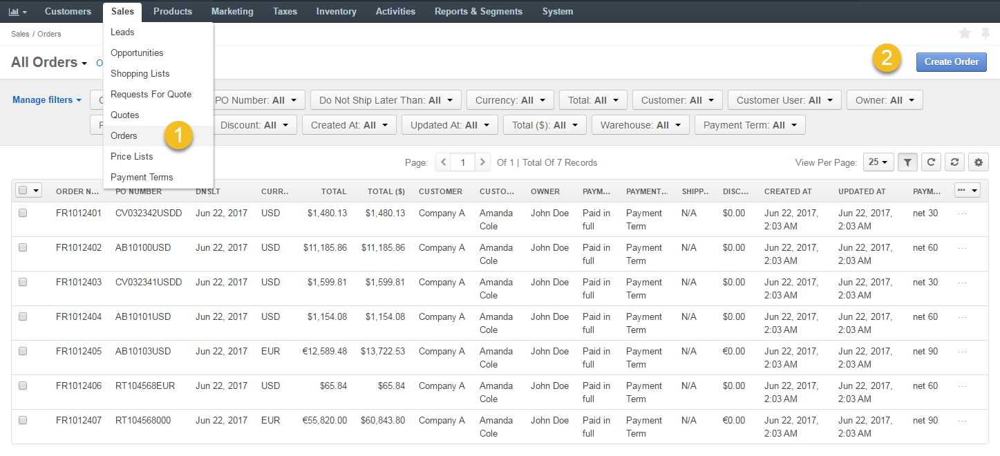
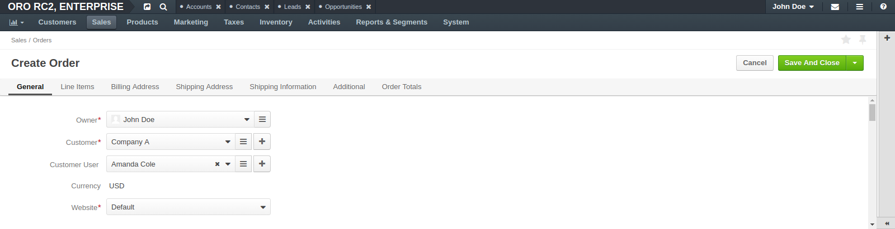
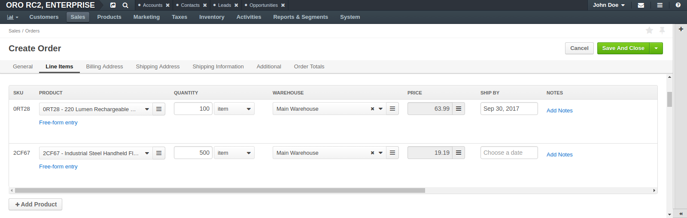
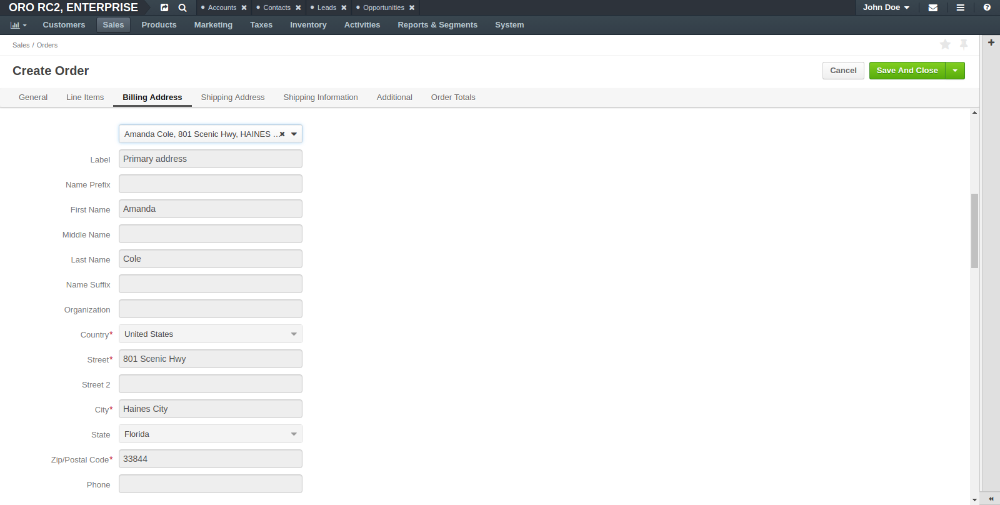
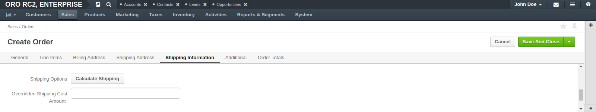
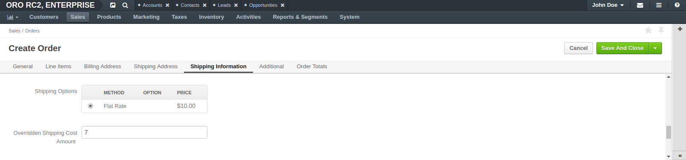
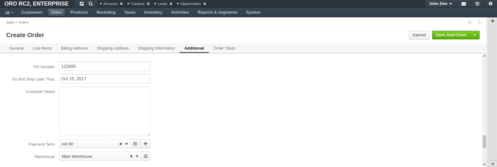
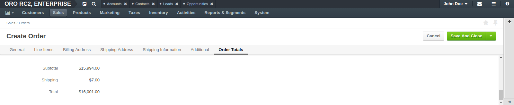

Create an Order from Scratch
To create a new order from scratch:
Navigate to Sales > Orders in the main menu.
Click Create Order at the top right of the page.

In the General section, fill in the following fields:
- Owner: The owner is prepopulated with the user creating the order but this value can be changed to another user of the system by clicking and selecting a user from the list.
- Customer: Use the drop-down to select a customer. Click to load the list of customers to choose from. If this is a new customer, click the plus button to open a new customer dialog.
- Customer User: Select a customer user, if necessary. This list will be populated with customer users associated with the customer. If this is a new customer user, click + to open a new customer dialog.
- Website: Select the website from which the order will be created.

In the Line Items section, provide the following information:
- Product: Add products to the order by clicking +Add Product. Use the drop-down to select a product. Alternatively, begin typing in the name of the product to narrow down your search. To see a list of all the products, click .
- Quantity: Enter product quantity.
- Warehouse: Choose a warehouse from the drop-down, or click to see a list of all warehouses.
- Price: Enter the price for the product, or click to select the price from the list.
- Ship by: If required, choose a date that the order must be shipped by at the customer’s request.
- Add Notes: Click the add notes link if you would like to add a note about the item.
- Taxes: View taxes calculated for the product(s) (if configured).
Note
To add additional products to the order, click +Add Product. To remove a product, click .

In the Billing Address section, fill in the billing address details when you are done adding products. Use the drop-down list to select an existing billing address, or select Enter Other Address to add a new one.

- In the Shipping Address section, fill in the shipping address details. Use the drop-down list to select an existing shipping address, or select Enter Other Address to add a new one.
In the Shipping Information section, provide information for the following:
- Shipping Method: Click Calculate Shipping to display any shipping options.
- Shipping Options: Use the radio button to select a shipping option among the preliminary configured shipping rules.
- Overridden Shipping Cost Amount: If required, override the shipping cost by adding your own value.


In the Additional section, enter additional details, if required (e.g. PO number, Do Not Ship Later Than date, payment term, and warehouse to ship items from), and add notes for the customer.

In the Order Totals section, review the final amount.

To save the order, click Save on the top right of the page.
The new order is now created.